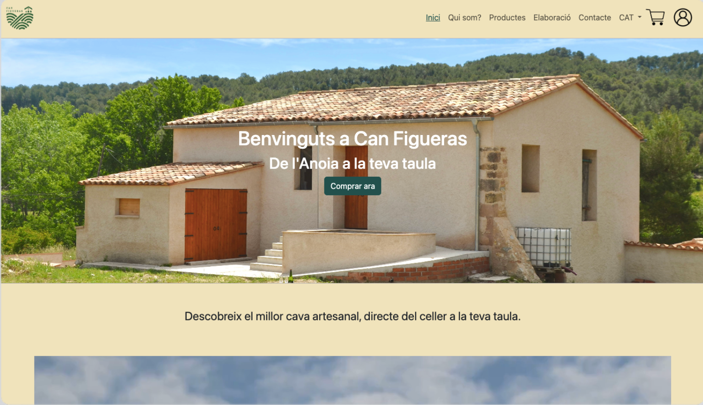

01UX/UI · FRONT-END
Can Figueras
Disseny i desenvolupament d'una web responsive per a una marca de cava, des de la identitat visual fins a la validació d'accessibilitat i SEO.
Repte
Comunicar tradició, proximitat i qualitat, facilitant alhora la navegació, la compra i la confiança.
Procés
Buyer persona, customer journey, wireframes, prototip interactiu, test amb Maze i implementació front-end.
Resultat
Una experiència clara, coherent i responsive amb una identitat pròpia i criteris d'accessibilitat.